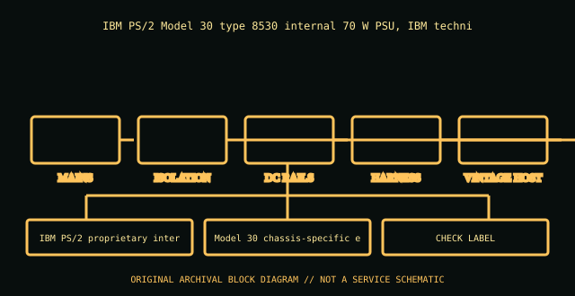

[ POWER CONVERSION // IDENTIFIED MODEL ]
IBM PS/2 Model 30 (8530) 70 W power supply
IBM PS/2 Model 30 type 8530 internal 70 W PSU, IBM technical-reference assembly. This entry covers the specific model or bounded historical system assembly identified here; suffixes and supplier revisions are not presumed equivalent.

HIGH-VOLTAGE SAFETY: Disconnect mains before external inspection. Never open a PSU. Internal capacitors can retain dangerous charge after disconnection. Do not probe or repair its interior; use qualified service or replace it.
Model-specific ratings & fit
| Manufacturer identity | IBM PS/2 Model 30 type 8530 internal 70 W PSU, IBM technical-reference assembly |
|---|---|
| Form factor / generation | IBM PS/2 proprietary internal PSU, 1987 era |
| AC input | 100–125 V or 200–240 V AC selection/input per 8530 technical reference and actual selector/nameplate. |
| DC output | 70 W supply; system output includes +5 V and +12 V with negative legacy rails; exact connector/rail tolerances are 8530 technical reference and unit label dependent. |
| Dimensions / mounting | Model 30 chassis-specific enclosed PSU; proprietary motherboard connection and mounting. Not AT/ATX. |
| Connectors | Proprietary PS/2 system connector and separate internal drive feeds; verify IBM pinout before substitution. |
| Revision distinctions | 8530 family includes system variants/board revisions; input selector and wiring must match the exact PSU assembly. |
Compatibility & safe handling
- Verify full model, suffix, region and revision using the actual unit nameplate and matching manufacturer manual. Wattage and plug shape alone do not establish compatibility.
- Check AC input range, rail and combined output limits, derating, signaling/pinout, cooling direction, mounting and system qualification before installation.
- PSU modular-side cables are model-specific. Never reuse an unapproved lead; a matching plug can carry a different pinout.
- Server hot-plug is permitted only in qualified host configurations and under the host’s documented redundancy/live-service procedure.
- Never open or internally probe the supply. Retire damaged, wet, burnt, corroded, modified or unidentified units.
Revision & archival notes
8530 family includes system variants/board revisions; input selector and wiring must match the exact PSU assembly.
IBM PS/2 Model 30 technical specifications/technical-reference scan. Record type 8530, PSU assembly, selector position and original harness; never adapt by connector shape.
Photograph the full nameplate, model/FRU, supplier, revision/date code, line selector, cable ends, mounting orientation and source-document issue. Keep observed label data separate from test results.
Manufacturer or primary references
- IBM PS/2 Model 30 (8530) 70 W power supply — manufacturer/product or primary technical referenceIBM PS/2 Model 30 type 8530 internal 70 W PSU, IBM technical-reference assembly. Check the exact revision, region and system support information.
- Intel ATX / ATX12V Power Supply Design GuideReference for desktop ATX context only. Proprietary historical and hot-swap server outputs are not made interchangeable by ATX standards.
The specific PSU nameplate and corresponding model/service documentation remain controlling.